library(sf)
library(gstat)
library(tmap)
library(terra)12 Geostatystyczne metody estymacji
Odtworzenie obliczeń z tego rozdziału wymaga załączenia poniższych pakietów oraz wczytania poniższych danych:
12.1 Estymacje geostatystyczne
Jednym z celów geostatystycznej analizy danych jest estymacja - tj. szacowanie wartości zmiennej w nieznanych punktach na podstawie danych z próbkowania. W geostatystyce wykorzystuje się grupę metod estymacji (interpolacji) określanych jako kriging. Kriging zakłada, że wartość zmiennej w danej lokalizacji jest zależna od obokległych obserwacji, którym nadawane są odpowiednie wagi na podstawie stopnia przestrzennej korelacji.
Istnieje szereg metod krigingu Do trzech podstawowych metod zalicza się:
- Kriging prosty (ang. Simple kriging) - zakłada, że średnia jest znana i stała na całym obszarze.
- Kriging zwykły (ang. Ordinary kriging) - wykorzystuje do estymacji tylko najbliższe obserwacje, które można określić poprzez podanie liczby punktów, które mają być uwzględnione lub maksymalnej odległości z której mają być uwzględniane punkty.
- Kriging z trendem (ang. Kriging with a trend) - wykorzystuje do estymacji (oprócz zmienności wartości wraz z odległością) położenie analizowanych punktów (tj. ich współrzędne x,y).
Kriging można zastosować do oszacowania wartość dla wybranych punktów lub dla siatki o określonej rozdzielczości.
12.2 Kriging w R
12.2.1 Pakiet gstat
Pakiet gstat dostarcza funkcji do geostatystycznej analizy danych, w tym tworzenia semiwariogramów (funkcja variogram()), modelowania semiwariogramów (funkcje vgm() oraz fit.variogram()) oraz przeprowadzenia krigingu oraz symulacji.
Do wykonania interpolacji jedną z metod krigingu zostanie wykorzystana funkcja gstat() z pakietu gstat. Funkcja gstat() tworzy obiekt klasy gstat, który zawiera wszystkie informacje potrzebne do wykonania krigingu. Funkcja ta wymaga zdefiniowania następujących argumentów:
- formula - zmienna dla której będzie wykonywana estymacja (w przykładzie jest to temp~1)
- locations - dane wejściowe zawierające zmierzone wartości zmiennej (w przykładzie punkty)
- model - parametrów modelu dopasowanego do semiwariogramu empirycznego (wynik działania funkcji
vgm()lubfit.variogram())
Dodatkowo w zależności od wybranej metody należy zdefniować argument:
- beta - średnia wartość stosowana przy krigingu prostym
- nmax - liczba najbliższych punktów uwzględnianych w krigingu zwykłym
- maxdist - maksymalna odległość, z której mają być uwzględniane punkty w krigingu zwykłym.
12.2.2 Estymacja dla wybranych lokalizacji
Estymacja dla wybranych lokalizacji punktowych wymaga:
- stworzenia obiektu klasy
gstatwykorzystując funkcjegstat()z parametrami krigingu; - wykonania predykcji dla lokalizacji zapisanych w zbiorze danych punktowych wykorzystując funkcję
predict().
12.2.3 Estymacja w siatce
Estymacja w siatce wymaga:
stworzenia siatki wykorzystując funkcję
rast()z pakietuterra(utworzony zostanie obiekt klasySpatRaster);stworzenia obiektu klasy
gstatwykorzystując funkcjęgstat()z parametrami krigingu;wykonanie interpolacji w siatce wykorzystując funkcję
interpolate()z pakietuterra.- w funkcji
interpolate()trzeba podać 3 argumenty: siatkę, obiekt klasygstatz parametrami krigingu oraz funkcję pozwalająca na wykonanie interpolacji w oparciu obiektgstat(funkcjainterpolate_gstat()). Należy pamiętać, aby każdorazowo wykonując kriging wczytać poniższą funkcję.
- w funkcji
interpolate_gstat = function(model, x, ...) {
v = st_as_sf(x, coords = c("x", "y"), crs = st_crs(model$data[[1]]$data))
p = predict(model, v, ...)
st_drop_geometry(p)
}12.3 Przykład 1: Estymacja dla wybranych lokalizacji
W poniższym przykładzie zastosujemy kriging prosty (ang. simple kriging) do oszacowania wartości w wybranych lokalizacjach.
12.3.1 Dane
library(sf)
granica = read_sf("data/granica.gpkg")
punkty = read.csv("data/punkty.csv")
punkty = st_as_sf(punkty, coords = c("x", "y"), crs = "EPSG:2180")
punkty = punkty[!is.na(punkty$temp), ]Do wygenerowania nowych lokalizacji użyjemy funkcji st_sample() z pakietu sf. Funkcja ta wymaga podania zasięgu obszaru, w którym mają być wygenerowane punkty, liczby punktów oraz typu próbkowania. W poniższym przykładzie wygenerowano lokalizacje 100 punktów losowo rozmieszczonych w granicy analizowanego obszaru.
#utworzenie zbioru punktowego z nowymi lokalizacjami, w których ma być wykonana estymacja.
set.seed(12)
nowe_punkty = st_sample(granica, 100, type = "random")library(tmap)
tm_shape(granica) +
tm_polygons(col = "grey") +
tm_shape(punkty) +
tm_dots(fill = "darkgreen", size = 0.7) +
tm_shape(nowe_punkty) +
tm_dots(fill = "black", size = 0.7)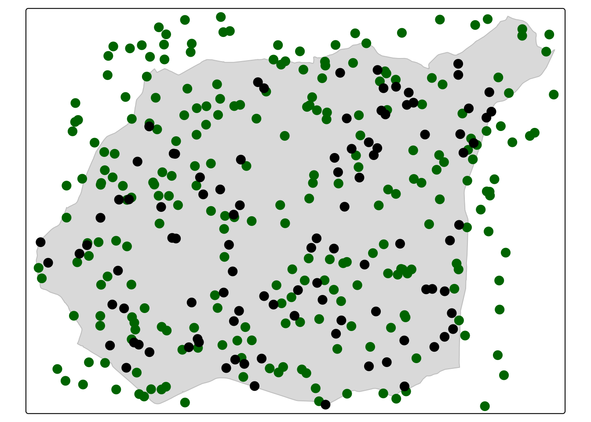
12.3.2 Analiza i modelowanie semiwariogramu
Estymacja z wykorzystaniem jednej z metod krigingu musi być poprzedzona analizą oraz modelowaniem semiwariogramu. Estymacja wymaga wykonania najpierw kilku kroków:
1. Stworzenie i wyświetlenie semiwariogram empiryczny analizowanej zmiennej z użyciem funkcji variogram() oraz plot().
library(gstat)
v = variogram(temp~1, punkty, cutoff = 5000)
plot(v)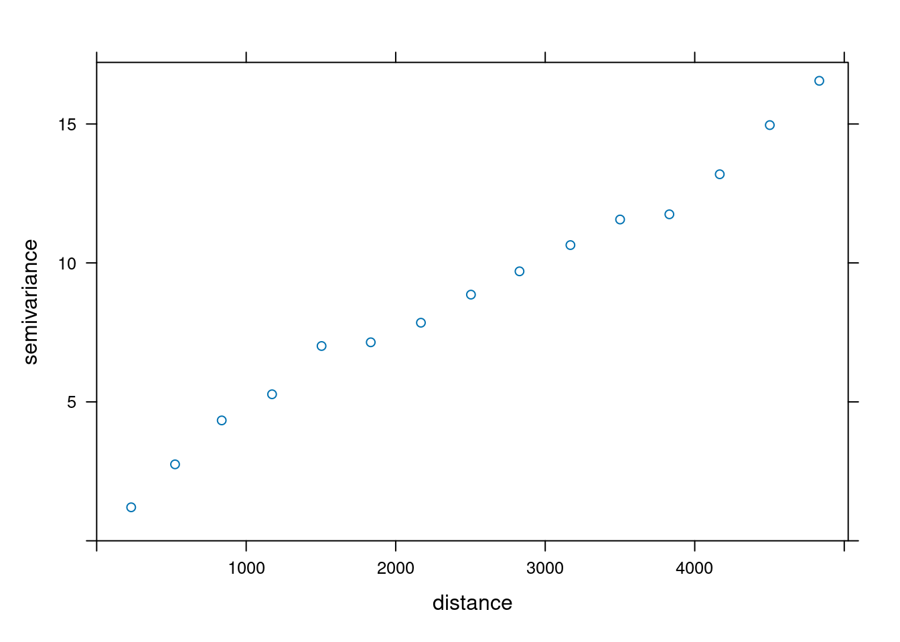
2. Zdefiniowanie wejściowych parametrów semiwariogramu używając funkcji vgm() (typ modelu, nugget, wariancja progowa, zasięg).
W poniższym przykładzie po stworzeniu semiwariogramu empirycznego, dopasowano model semiwariogramu składający się z funkcji sferycznej o zasięgu 4000 metrów i wartości nuggetu równej 0,5.
model_sph = vgm(psill = 10, model = "Sph", range = 4000, nugget =0.5)
plot(v, model_sph)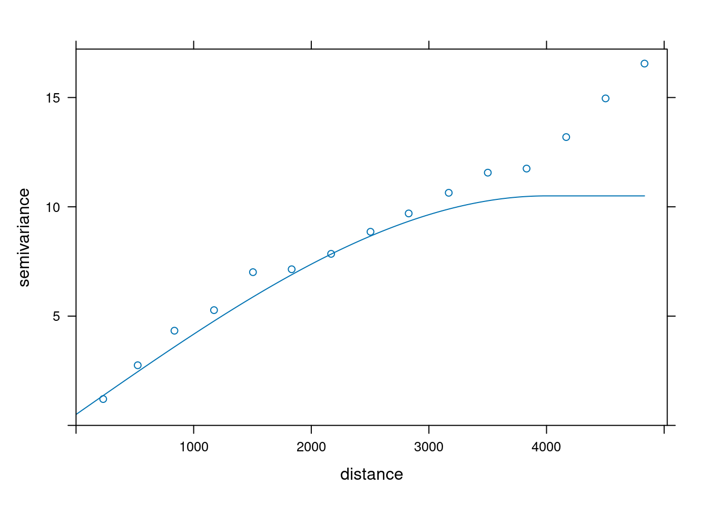
3. Dopasowanie parametrów modelu używając funkcji fit.variogram().
model = fit.variogram(v, model_sph)
plot(v, model = model)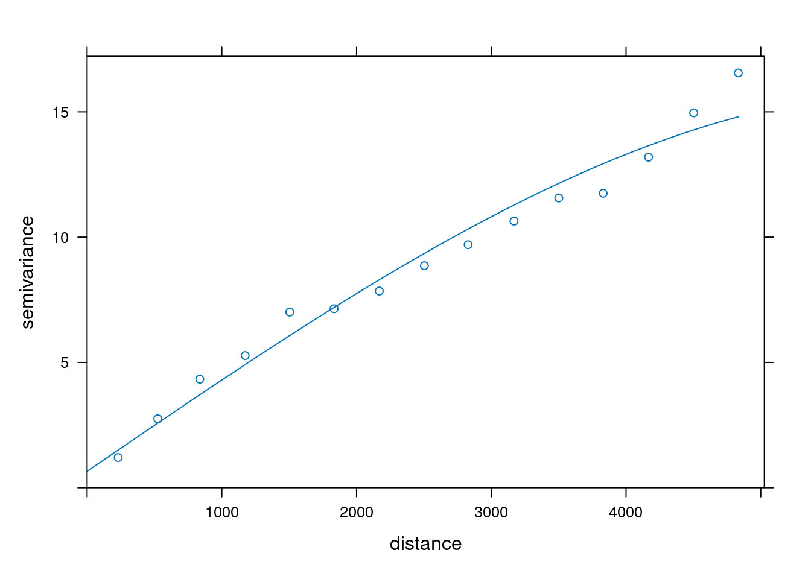
12.3.3 Estymacja
W przykładzie wykorzystamy kriging prosty (simple kriging), który zakłada, że średnia jest znana i stała na całym obszarze. Jako średnią podamy średnią wartość zmiennej temp.
mean(punkty$temp)[1] 15.27321W pierwszym etapie zostanie utworzony obiekt klasy gstat zawierający parametry krigingu. Obiekt klasy gstat składa się z kilku list zawierających:
- formułę (w przykładzie temp~1),
- ramkę danych z danymi wejściowymi zawierającymi wartości estymowanej zmiennej (w przykładzie obiekt punkty),
- listę zawierającą parametry modelu (obiekt model będący wynikiem działania funkcji
fit.variogram()), - inne parametry krigingu (np. parametr beta określający średnią wartość zmiennej w analizowanym obszarze).
sk_param = gstat(formula = temp ~ 1,
locations = punkty,
model = model,
beta = 15)Po wyświetleniu obiektu sk_param otrzymamy następujące informacje:
- formuła
- wielkość zbioru danych wejściowych (liczba kolumn i wierszy w zbiorze danych punkty)
- parametry modelu
sk_paramdata:
var1 : formula = temp`~`1 ; data dim = 247 x 5 beta = 15
variograms:
model psill range
var1[1] Nug 0.6557973 0.000
var1[2] Sph 15.1551913 6188.152Kolejnym krokiem jest wykonanie predykcji wykorzystując funkcję predict(). Funkcja predict() wymaga zdefiniowania dwóch argumentów: obiektu klasy gstat zawierającego parametry krigingu (w przykładzie obiekt sk_param) oraz nazwy zbioru danych zawierającego nowe lokalizacje, dla których ma być wykonana estymacja (w przykładzie obiekt nowe punkty).
sk_punkty = predict(sk_param, nowe_punkty)[using simple kriging]Wynik krigingu prostego (oraz innych metod krigingu dostępnych w pakiecie gstat), można podejrzeć wpisując nazwę wynikowego obiektu. Szczególnie ważne są dwie, nowe zmienne:
- var1.pred - to wartość estymowana dla każdego punktu (lub oczka siatki)
- var1.var - informuje o wariancji estymacji.
sk_punktySimple feature collection with 100 features and 2 fields
Geometry type: POINT
Dimension: XY
Bounding box: xmin: 745637 ymin: 712676.2 xmax: 755590.9 ymax: 720205.4
Projected CRS: ETRF2000-PL / CS92
First 10 features:
var1.pred var1.var geometry
1 14.33853 2.016268 POINT (754903.3 718651.9)
2 13.02704 3.059513 POINT (748625.5 716346.2)
3 17.50632 2.001131 POINT (747480.4 714803.1)
4 10.88570 1.137811 POINT (747588.4 717210.4)
5 19.12422 2.593422 POINT (752887.2 713523.5)
6 15.94537 2.135047 POINT (745803.6 715810.5)
7 15.75018 3.389682 POINT (745637 716264.8)
8 13.27067 2.204342 POINT (750037.2 717080.5)
9 13.76263 3.044975 POINT (754858.7 720205.4)
10 13.48186 1.332920 POINT (749901.1 716873.7)Obie uzyskane zmienne można wyświetlić z użyciem pakietu tmap.
library(tmap)
tm_shape(sk_punkty) +
tm_dots(col = c("var1.pred", "var1.var"),
size = 1,
style = "cont",
palette = list("-Spectral")) +
tm_layout(legend.frame = TRUE)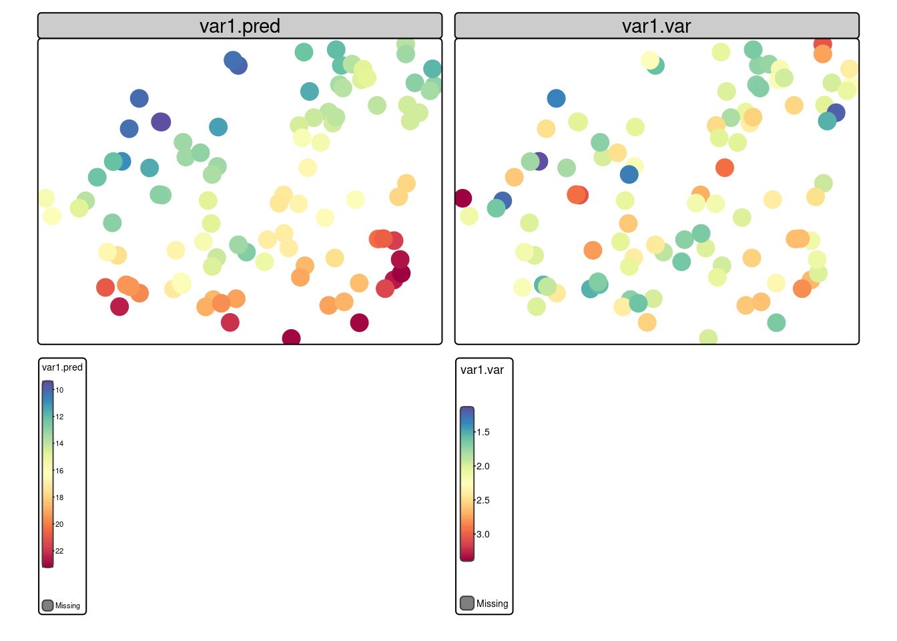
12.4 Przykład 2: Estymacja w siatce
12.4.1 Dane
library(terra)
#punkty przekształcone do warstwy geoprzestrzennej typu sf
punkty = read.csv("data/punkty.csv")
punkty = st_as_sf(punkty, coords = c("x", "y"), crs = "EPSG:2180", remove = FALSE)
punkty = punkty[!is.na(punkty$temp), ]
#granica obszaru wczytana jako obiekt klasy SpatVector z pakietu terra
granica = vect("data/granica.gpkg")12.4.2 Tworzenie siatki
Do stworzenia siatki można wykorzystać funkcję rast() z pakietu terra, która tworzy nowy obiekt rastrowy klasy SpatRaster o zdefiniowanym zasięgu oraz rozdzielczości. W poniższym przykładzie utworzono siatkę dla zasięgu zdefiniowanego przez obwiednię (zasięg) warstwy wektorowej granica oraz o rozdzielczości 50m.
siatka = rast(ext = granica, res = 50, crs = crs(granica))
siatkaclass : SpatRaster
size : 172, 229, 1 (nrow, ncol, nlyr)
resolution : 50, 50 (x, y)
extent : 745541.7, 756991.7, 712651.6, 721251.6 (xmin, xmax, ymin, ymax)
coord. ref. : ETRF2000-PL / CS92 (EPSG:2180) 12.4.3 Analiza i modelowanie semiwariogramu
Wykonanie krigingu wymaga kilku kroków, w których zostanie stworzony semiwariogram empiryczny oraz dopasowany do niego model:
v = variogram(temp~1, punkty, cutoff = 5000)
model_sph = vgm(psill = 10, model = "Sph", range = 4000, nugget =0.5)
model = fit.variogram(v, model_sph)12.4.4 Estymacja: Kriging prosty
Wykonanie interpolacji w siatce wymaga stworzenia obiektu klasy gstat z parametrami krigingu. Obiekt ten tworzony jest wykorzystując funkcję gstat().
sk_param = gstat(formula = temp ~ 1,
locations = punkty,
model = model,
beta = 15)sk_paramdata:
var1 : formula = temp`~`1 ; data dim = 247 x 7 beta = 15
variograms:
model psill range
var1[1] Nug 0.6557973 0.000
var1[2] Sph 15.1551913 6188.152W drugim kroku należy wykonać interpolację w siatce wykorzystując funkcję interpolate(). Funkcja interpolate() wymaga podania 3 argumentów:
- obiekt siatki (w przykładzie siatka)
- obiekt klasy
gstatz parametrami krigingu (w przykładzie sk_param) - funkcję pozwalająca na wykonanie interpolacji w oparciu o obiekt klasy
gstat(funkcjainterpolate_gstat())
interpolate_gstat = function(model, x, ...) {
v = st_as_sf(x, coords = c("x", "y"), crs = st_crs(model$data[[1]]$data))
p = predict(model, v, ...)
st_drop_geometry(p)
}sk = interpolate(siatka, sk_param, fun = interpolate_gstat)[using simple kriging]
[using simple kriging]Wyniki estymacji można wyświetlić podając nazwę wynikowego obiektu.
skclass : SpatRaster
size : 172, 229, 2 (nrow, ncol, nlyr)
resolution : 50, 50 (x, y)
extent : 745541.7, 756991.7, 712651.6, 721251.6 (xmin, xmax, ymin, ymax)
coord. ref. : ETRF2000-PL / CS92 (EPSG:2180)
source(s) : memory
names : var1.pred, var1.var
min values : 8.369086, 0.966972
max values : 24.305490, 9.434752 Do wyświetlenia wyników krigingu można uzyć funkcji podstawowej plot(). Funkcja mask() przycina obszar tylko do granicy obszaru analizy.
plot(mask(sk, granica))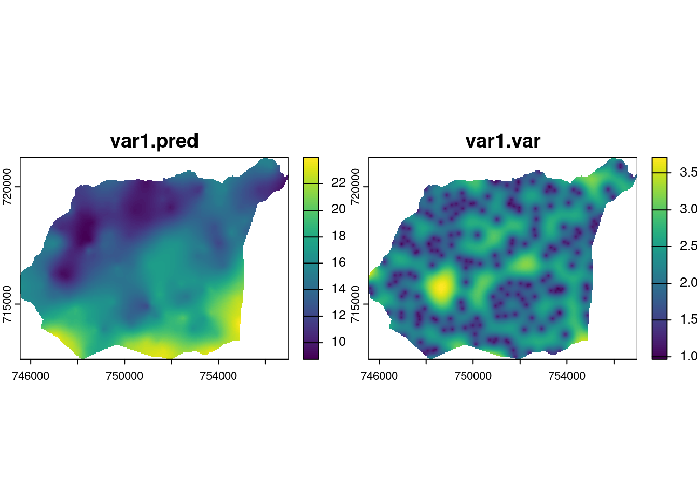
Do wizualizacji wyników estymacji można wykorzystać także pakiet tmap. Obiekt zawierający wyniki estymacji można wyświetlić używając funkcji tm_shape() and tm_raster().
tm_shape(sk) +
tm_raster(col = c("var1.pred"), style = "cont", palette = "-Spectral")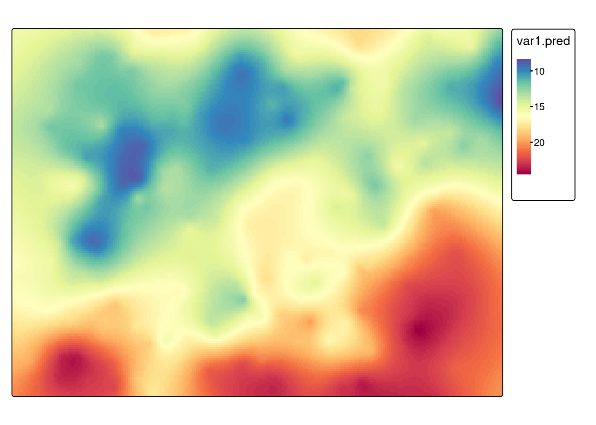
tm_shape(sk) +
tm_raster(col = c("var1.var"), style = "cont", palette = "viridis") 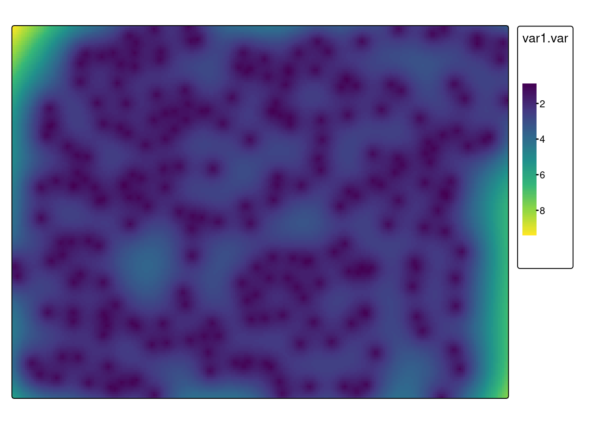
Zwróć uwagę, że siatka została utworzona używając zasięgu (bounding box) warstwy wektorowej granica. Obiekt można przyciąć do granic obszaru używając funkcji crop() z pakietu terra.
sk_crop = crop(sk, granica, mask=TRUE)tm_shape(sk_crop) +
tm_raster(col = c("var1.pred"), style = "cont", palette = "-Spectral")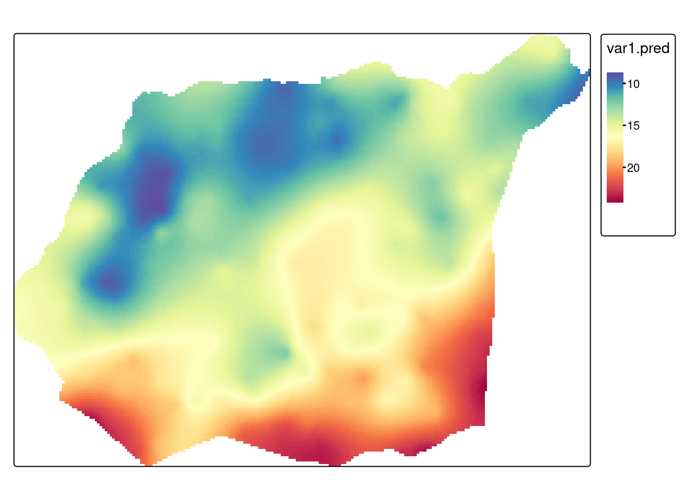
12.4.5 Kriging zwykły
W krigingu zwykłym średnia traktowana jest jako wartość nieznana. Metoda ta uwzględnia lokalne fluktuacje średniej poprzez stosowanie ruchomego okna. Parametry ruchomego okna można określić za pomocą jednego z dwóch argumentów:
- nmax - użyta zostanie określona liczba najbliższych obserwacji.
- maxdist - użyte zostaną jedynie obserwacje w zadanej odległości.
Tak jak w przypadku krigingu prostego wykonanie krigingu zwykłego składa się z dwóch etapów: stworzenia obiektu klasy gstat zawierającego parametry krigingu oraz wykonanie interpolacji wykorzystując funkcję interpolate(). W poniższym przykładzie do obliczenia średniej w ruchomym oknie zostanie wykorzystanych 30 najbliższych punktów (argument nmax = 30).
ok_param = gstat(formula = temp ~ 1,
locations = punkty,
model = model,
nmax = 30)ok = interpolate(siatka, ok_param, fun = interpolate_gstat)[using ordinary kriging]
[using ordinary kriging]ok_crop = crop(ok, granica, mask=TRUE)Podobnie jak w przypadku krigingu prostego, można przyjrzeć się wynikom estymacji podając nazwę wynikowego obiektu oraz wyświetlić je używając funkcji tm_shape() and tm_raster().
tm_shape(ok_crop) +
tm_raster(col = c("var1.pred"), style = "cont", palette = "-Spectral") 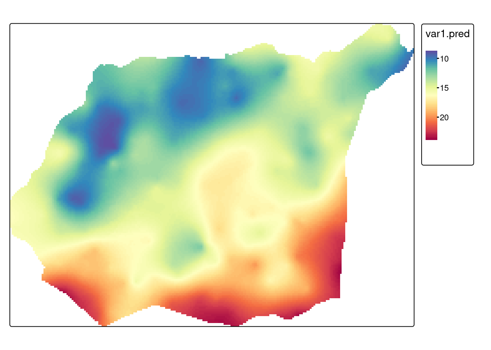
tm_shape(ok_crop) +
tm_raster(col = c("var1.var"), style = "cont", palette = "viridis") 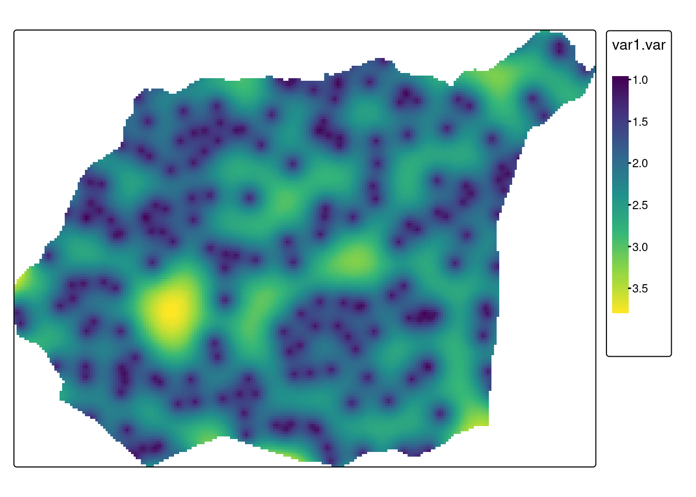
Wykonaj kriging zwykły wykorzystując jedynie punkty położone w odległości do 1500m (podpowiedź: tworząc obiekt klasy gstat należy wykorzystać parametr maxdist, zamiast nmax). Dotnij wynik do granicy obszaru. Zwizualizuj wyniki.
12.4.6 Kriging z trendem
Kriging z trendem, określany również jako kriging z wewnętrznym trendem, do estymacji wykorzystuje (oprócz zmienności wartości wraz z odległością) położenie analizowanych punktów.
12.4.6.1 Przygotowanie danych
Przy wykonaniu krigingu z trendem istotne są także współrzędne punktów. Wykorzystamy w tym celu obiekt punkty_df, który zawiera wczytane z pliku tekstowego dane.
punkty_df = read.csv("data/punkty.csv")
punkty_df = punkty_df[!is.na(punkty_df$temp), ]
head(punkty_df) srtm clc temp ndvi savi x y
1 175.7430 1 13.852222 0.6158061 0.4189449 750298.0 716731.6
2 149.8111 1 15.484209 0.5558816 0.3794864 753482.9 717331.4
3 272.8583 NA 12.760814 0.6067462 0.3745572 747242.5 720589.0
4 187.2777 1 14.324648 0.3756170 0.2386246 755798.9 718828.1
5 260.1366 1 15.908549 0.4598393 0.3087599 746963.5 717533.5
6 160.1416 2 9.941118 0.5600288 0.3453627 756801.6 720474.1Drugim plikiem potrzebnym do wykonania analizy będzie granica obszaru wczytana jako obiekt klasy SpatVect używając biblioteki terra.
granica = vect("data/granica.gpkg")Wykonanie estymacji metodą krigingu wymaga także utworzenia siatki. Siatkę utworzymy używając funkcji rast() z pakietu terra.
siatka = rast(ext = granica, res = 50, crs = crs(granica))12.4.6.2 Analiza i modelowanie struktury przestrzennej
W funkcji variogram() pierwszy argument musi przyjąć postać temp ~ x + y, co oznacza, że uwzględniamy liniowy trend zależny od współrzędnej x oraz y. Argument data pozwala na podanie ramki danych zawierającej wartość zmiennej oraz współrzędne, argument locations definiuje, które zmienne zawierają współrzędne punktów.
library(gstat)
vario_kzt = variogram(temp ~ x + y, data = punkty_df, locations = ~x + y)Następnym etapem jest dopasowanie modelu do semiwariogramu empirycznego.
fitted_kzt = fit.variogram(vario_kzt, vgm(model = "Sph", nugget = 1))
fitted_kzt model psill range
1 Nug 0.2822454 0.0
2 Sph 6.9271803 2193.7Kolejnym etapem jest wykonanie estymacji. W tym celu należy utworzyć obiekt klasy gstat zawierający parametry krigingu oraz wykonać interpolacji wykorzystując funkcję interpolate(). Należy tutaj pamiętać, aby formuła (w przykładzie temp ~ x + y) był taki sam podczas budowania semiwariogramu, jak i estymacji.
kt_param = gstat(formula = temp ~ x + y,
data = punkty_df,
locations = ~ x+ y,
model = fitted_kzt)kt = interpolate(siatka, kt_param)[using universal kriging]
[using universal kriging]ktclass : SpatRaster
size : 172, 229, 2 (nrow, ncol, nlyr)
resolution : 50, 50 (x, y)
extent : 745541.7, 756991.7, 712651.6, 721251.6 (xmin, xmax, ymin, ymax)
coord. ref. : ETRF2000-PL / CS92 (EPSG:2180)
source(s) : memory
names : var1.pred, var1.var
min values : 8.15150, 0.5110511
max values : 24.55763, 8.4636071 Do wyświetlenia wyników krigingu można także uzyć funkcji podstawowej plot(). Funkcja mask() przycina obszar tylko do granicy obszaru analizy.
plot(mask(kt, granica))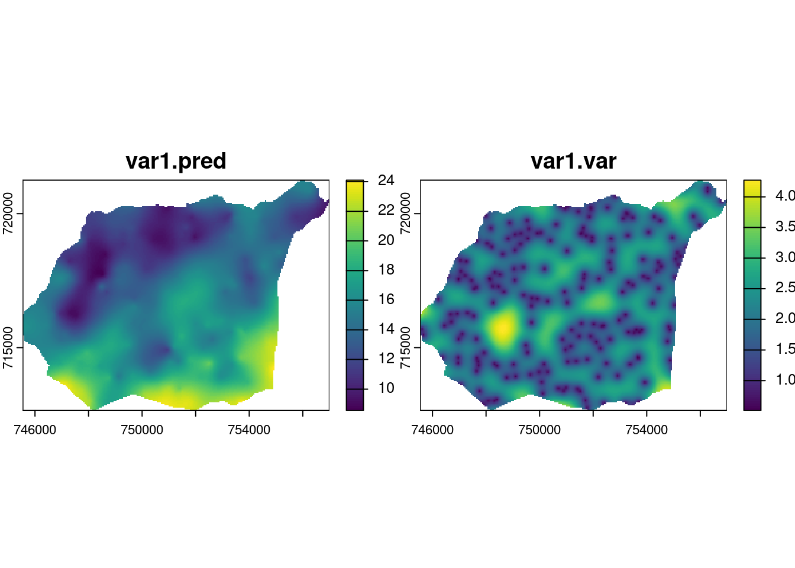